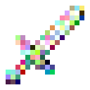

系统商店
系统商店以贡献值出售物品。玩家浏览目录并购买，管理员设置商品、售价和上架状态。
浏览商品
输入 /shop 打开商店，选择商品并填写购买份数。商品由系统供应，售价以目录显示的贡献值为单位。原版客户端使用原版对话界面，安装客户端模组后使用专用页面。
界面操作
| 操作 | 方法 |
|---|---|
| 查找 | 按名称、物品标识符或商品编号搜索，可按目录顺序、名称或价格排序 |
| 查看 | 选择商品查看每份数量、售价和描述 |
| 购买 | 填写份数后提交；原版对话界面可直接购买一份 |
| 刷新 | 更新目录，同时保留本次搜索、排序、选择和滚动位置 |
| 返回 | 按 Esc 返回上级或关闭商店 |
原版对话界面每页显示最多 8 件商品。购买多份可使用 /shop buy <商品编号> <份数>。
界面显示与控件
| 界面 | 形态与能力 |
|---|---|
| 专用客户端面板 | 最大宽度 460 界面逻辑像素，左侧两列商品卡片，搜索框与目录共用边界；点击卡片更新右侧名称、编号、物品、数量、价格与描述；可滚轮滚动并显示只读滚动条；搜索支持名称、物品标识符与商品编号，可选择配置顺序、名称或价格排序 |
| 原版对话界面 | 每页最多 8 件商品，显示编号、数量、售价及描述，可直接购买一份、分页、刷新、领取待发物品；购买更多用 /shop buy <编号> <份数>；管理员入口与表单不需要客户端模组 |
- 刷新和购买后的自动刷新保留搜索、排序、选中商品、份数和滚动位置；退出后重新
/shop打开则重置。 - 卡片作为真实控件注册，而不是仅绘制命中区域；管理员目录复用同一双列选择布局，编辑页独立且在返回时重新建立控件。
- 操作失败在专用界面显示提示，同时发送聊天反馈；专用页面不暂停单人世界。
默认商品
这些商品在首次创建商店目录时导入。管理员可以修改商品和售价，购买时以服务器目录为准。原初武器是独立的一组外观商品。
购买与交付
- 选择商品并填写份数，核对每份数量与总价。
- 提交购买后，服务器检查商品状态和余额，成功时扣除贡献值并记录订单。
- 购买成功后自动尝试交付。待发物品可使用
/shop claim领取，断线或跨服后仍可领取。
| 项目 | 规则 |
|---|---|
| 单次份数 | 1—64 份 |
| 单次物品总量 | 最多 2304 个 |
| 总价 | 最多 2147483647 贡献值 |
| 背包不足 | 物品掉落在玩家附近 |
| 历史总收入 | 购买保持原累计收入 |
界面提示目录已更新时，先刷新再购买。余额不足或商品下架时，本次购买不扣款。订单结果暂时不明时，使用 /shop retry 沿用原订单，见商店命令。
订单校验与交付恢复
- 购买使用共享数据库的当前商品记录；商品行锁保证与编辑同步。
- 客户端界面附带商品版本，目录过期时拒绝成交并提示刷新，不按玩家没看到的新价格扣款。
- 文字命令省略版本时，以服务器当时的商品价格成交。
- 余额不足或商品已下架时不扣款、不创建订单或流水。
- 单笔 1—64 份，最多 2304 个物品，总价不超过 231-1。
- 成功时在同一事务中锁账户、扣款、写
SHOP_BUY流水、创建shop_order与reward_delivery。购买不影响历史总收入。 - 订单有全局唯一标识符；结果不明时用
/shop retry <订单ID> <商品ID> <份数>沿用原请求。即使之后商品改价或下架，已提交订单仍返回原结果，不重复扣款或创建待发记录。换玩家、商品或份数使用同一订单标识符会被拒绝。
物品交付与故障恢复
购买成功后，待发记录支持断线或跨服后领取。背包放不下的物品掉落在玩家附近。短租约协调各服交付；背包操作和数据库确认分开完成，交付后、确认前崩溃可能重复发物品。
一次性武器皮肤

商店默认提供原初剑、斧、镐、锄、铲和矛，每份 1 件，初始售价 100 贡献值。原初物品是可选择外观的烟火之星；主手使用后打开皮肤列表，预览并确认即可获得对应的金质武器或工具。管理员可以调整商品价格及上下架状态。
预览期间保留原初物品，确认后完成一次性定型。皮肤成品可以按对应金质装备配方强化。获取与使用见特殊道具，外观列表见武器皮肤。
原初商品的组件定义
主服务器启动时补齐缺失的原初商品，保留已有商品设置。示例：/shop put_on item minecraft:firework_star[max_stack_size=1,item_model='contribution:weapon_skin/sword',item_name='原初剑'] "原初剑" 1 100 右键选择一次外观。其他类别使用对应模型路径与名称。模型选择依据 item_name，铁砧命名使用 custom_name。
管理与数据
商品与目录
- 商品统一保存在数据库的
shop_offer表中，群组服共享同一个目录。 - 每件商品自动分配稳定、不可复用的正整数编号。
- 商品字段包括：名称、物品标识符、完整物品定义
item_spec、每份数量、售价、描述、上架状态、排序值和编辑版本。 - 名称最多 64 字，描述最多 512 字，每份 1—64 个物品，售价 1—2147483647 贡献值。
- 物品必须存在于服务器注册表中；排序值越小越靠前，相同排序值按编号排列。
- 当前最多保留 256 件商品（包含已下架商品），以约束快照大小、查询和客户端筛选开销。
主服务器第一次升级或创建数据库时会自动从 rewards.shopOffers 导入初始商品，并保留旧字符串标识符（如 bread、torch）作为购买与旧订单重试的兼容别名；默认导入面包、火把、铁镐。导入只进行一次，之后重启或修改配置文件都不会覆盖目录。
/shop take_off 只把商品下架，不会删除商品、历史订单或待发物品，管理员可以再次上架。
管理员操作
管理员等级 2 的玩家可点击商店右上角「管理」，或执行 /shop admin。管理目录显示已上架及已下架商品，选中后点击「编辑商品」；「新建商品」打开完整表单。表单可修改名称、物品及组件、数量、价格、排序、描述及上架状态。
/shop put_on <物品[组件]> <名称> <每份数量> <售价> [描述]
/shop take_off <商品编号>
/shop modify <商品编号> [名称] [每份数量] [售价] [描述]put_on自动分配编号并上架，排序默认 0。modify按名称、数量、售价、描述的顺序填写；只修改后面的字段时，前面填-保持不变，未填写的尾部字段不变；描述填""清空。- 中文名称或含空格的名称用引号；描述可直接填写多个词。
- 物品、状态和排序可以在完整管理表单中修改。
- 保存时校验编辑版本：其他管理员已经修改时拒绝覆盖，并保留输入供修改或重读。
- 原版对话界面的模板转义有限：名称和描述不要含双引号、反斜杠；复杂文字用正确转义的管理员命令填写。
/shop modify 4 - - 35 # 只修改售价，其余保持不变自定义物品组件
上架及编辑物品使用 26.3 原版 ItemArgument/ItemParser，与 /item ... with <物品> 的物品参数相同，不自行拆分物品组件定义。支持附魔、自定义名称、属性、模型、药水、耐久、自定义数据以及 !组件 删除默认组件。/shop put_on item <物品及组件> ...手写定义；/shop put_on hand_item <名称> <数量> <售价> [描述]保存主手完整组件快照，不消耗原物品，仅玩家可用，超长或不能无损往返会拒绝。旧直接物品语法兼容。数量独立由「每份数量」字段定义，不要在物品定义中混入 count。
/shop put_on minecraft:diamond_sword[minecraft:custom_name={text:'荣誉剑'},minecraft:enchantments={'minecraft:unbreaking':3}] "荣誉剑" 1 100 纪念装备- 完整定义最多 2048 个字符；未知组件、无效组件值及尾随内容会被原版解析器拒绝。
- 数据库仍保留纯注册表标识符用于查询，并另存完整定义。
- 购买时把完整定义拷贝到待发记录，与扣款在同一事务内完成；之后编辑或下架商品不会改变已付款的物品。
- 交付在服务器主线程用当前注册表解析一次，按组件指定的最大堆叠数拆分副本，保留全部组件。
- 解析失败不发出普通物品替代，也不丢弃待发记录，记录警告留待管理员排查。
- 跨服必须安装相同注册项、数据包与模组。旧活动奖励和旧待发记录仍支持普通物品标识符。
查询与数据处理
目录读取、控件复用和缓存
- 目录、编辑、购买都在现有有界数据库线程池中执行，不阻塞游戏主线程。
- 服务器仅在玩家请求时读取商品快照；客户端搜索或排序变化时重建缓存，不逐帧访问数据库或重新排序。
- 每页只注册当前容量的卡片控件，滚动复用这些控件。
- 客户端商品图标按完整定义预览，最多缓存 512 个样品，离服清空。
- 文本快照最大长度提升至 1 MiB 以容纳目录中的组件信息；目录数量仍最多 256 件。